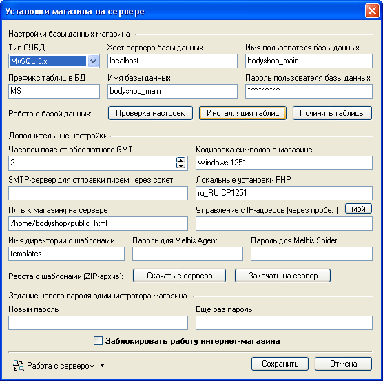
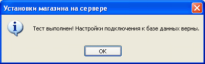

Параметры магазина, необходимые для работы серверной части комплекса, хранятся на сервере. Отредактировать эти параметры можно вручную, например, по FTP в файле на сервере: /admin/privat/privat.php, но гораздо удобнее это сделать из программы, выбрав из главного окна "Магазин - Сервер - Установки магазина на сервере":

Следует учесть, что "Часовой пояс от абсолютного GMT" указывается от абсолютного времени по Гринвичу. Например, часовой пояс в Москве зимой +3 GMT, а при переходе на летнее время +4 GMT.
Помимо этого можно проверить настройки для работы с базой данных, при успешном выполнении тестирования будет выдано сообщение:

и проинсталлировать таблицы - поверх текущих (используется при начальной установке магазина или его полной переустановке).
Кнопка "Починить таблицы" выполняет тестирование таблиц с данными на сервере и выполняет операцию по их восстановлению и оптимизации.
Также присутствуют функции, автоматизирующие работу с шаблонами магазина, обеспечивающими его внешний вид, подробнее см. редактор шаблонов магазина. Шаблоны магазина состоят из множества файлов, которые достаточно долго закачивать или скачивать с сервера по FTP, поэтому есть возможность ускорить этот процесс путем передачи их в виде zip-архива.
Поля "Пароль для Melbis Agent" и "Пароль для Melbis Spider" задают пароли для соответствующих программ, поставляемых в комплексе Melbis Shop.